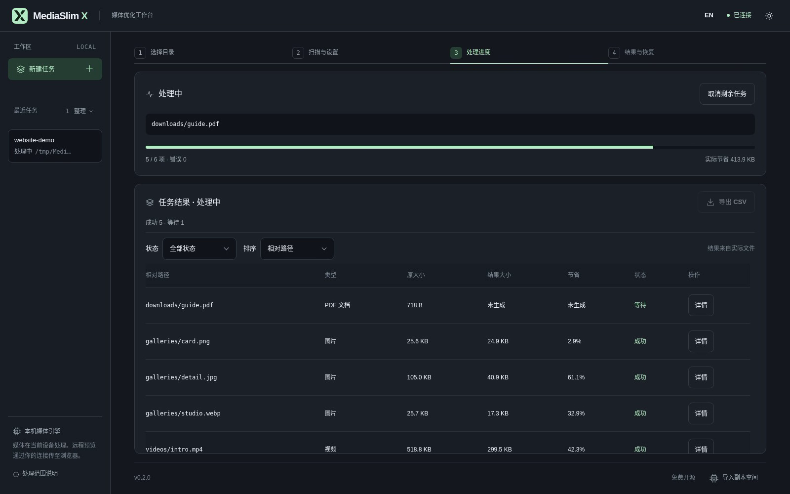

<!doctype html><html lang="zh-CN"><meta charset="utf-8"><meta name="viewport" content="width=1920"><title>MediaSlim X 分镜 04</title>
<style>
body{font-size:18px}
*{box-sizing:border-box}html,body{margin:0;width:1920px;height:1080px;overflow:hidden;background:#15181D;color:#EDF1F5;font-family:"Segoe UI Variable","Segoe UI","Microsoft YaHei UI","Noto Sans CJK SC",system-ui,sans-serif}.frame{position:relative;width:100%;height:100%;padding:72px 80px}.brand{display:flex;align-items:center;gap:18px;font-size:32px;font-weight:600;letter-spacing:-.7px}.brand svg{width:52px;height:52px}.brand em{font-style:normal;color:#B4EDC6}.chapter{position:absolute;right:80px;top:89px;font-size:18px;color:#A0AAB7;font-variant-numeric:tabular-nums;letter-spacing:1px}.intro{position:absolute;left:80px;top:325px;width:500px}h1{margin:0 0 31px;font-size:64px;font-weight:600;line-height:1.3;letter-spacing:-1.8px;text-wrap:balance}.subtitle{font-size:26px;line-height:1.6;color:#B4EDC6;margin:0 0 29px;white-space:nowrap}.description{font-size:24px;line-height:1.75;color:#A0AAB7;margin:0;white-space:nowrap}.screen{position:absolute;right:80px;top:175px;width:1190px;margin:0}.screen img{display:block;width:100%;height:auto;border:1px solid #333C47;border-radius:12px}.signature{position:absolute;right:150px;top:345px;width:300px;height:300px}.signature svg{width:100%;height:100%}.footer{position:absolute;left:80px;right:80px;bottom:47px;padding-top:22px;border-top:1px solid #333C47;display:flex;justify-content:space-between;font-size:18px;color:#A0AAB7;line-height:1.6}.footer .identity{color:#EDF1F5}
</style><main class="frame"><div class="brand"><svg xmlns="http://www.w3.org/2000/svg" viewBox="0 0 64 64" role="img" aria-label="MediaSlim X"><title>MediaSlim X</title><g fill="#B4EDC6"><path transform="translate(4 5) scale(.254545 .257143) translate(-200 0)" d="M200,0L280,105L200,210L260,210L340,105L260,0L200,0Z"/><path transform="translate(4 5) scale(.254545 .257143) translate(-200 0)" fill-rule="evenodd" d="M352.5,88.59375L420,0L360,0L322.5,49.21875L352.5,88.59375Z M352.5,121.40625L420,210L360,210L322.5,160.78125L352.5,121.40625Z M292.5,121.40625L280,105L292.5,88.59375L305,105L292.5,121.40625Z"/></g></svg>
<span>MediaSlim <em>X</em></span></div><div class="chapter">04 / 06 · 18–25s</div><section class="intro"><h1>逐文件处理<br>随时取消剩余</h1><p class="subtitle">已完成结果保留</p><p class="description">查看真实任务进度<br>错误与跳过原因逐项记录</p></section><figure class="screen"></figure><footer class="footer"><span>合成演示素材 · WSL 实际界面 · 分镜草稿</span><span class="identity">MediaSlim X</span></footer></main></html>